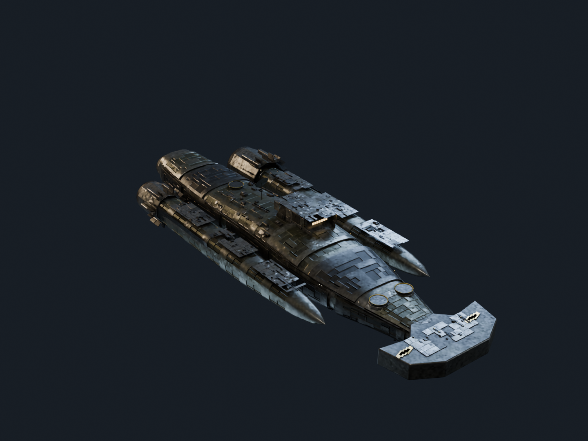
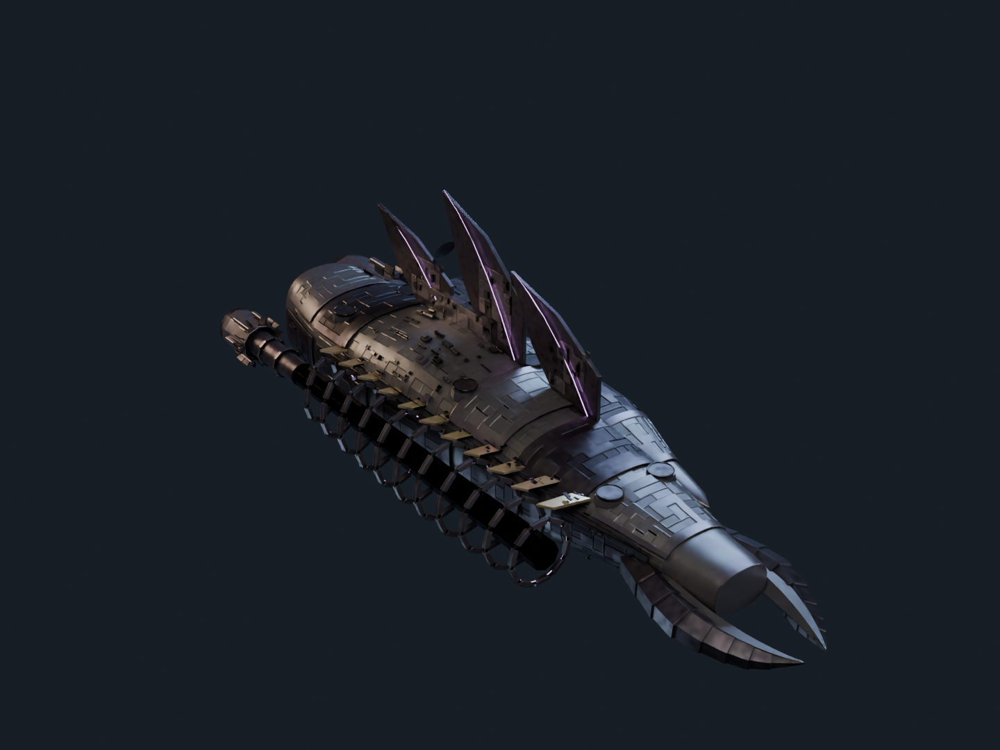
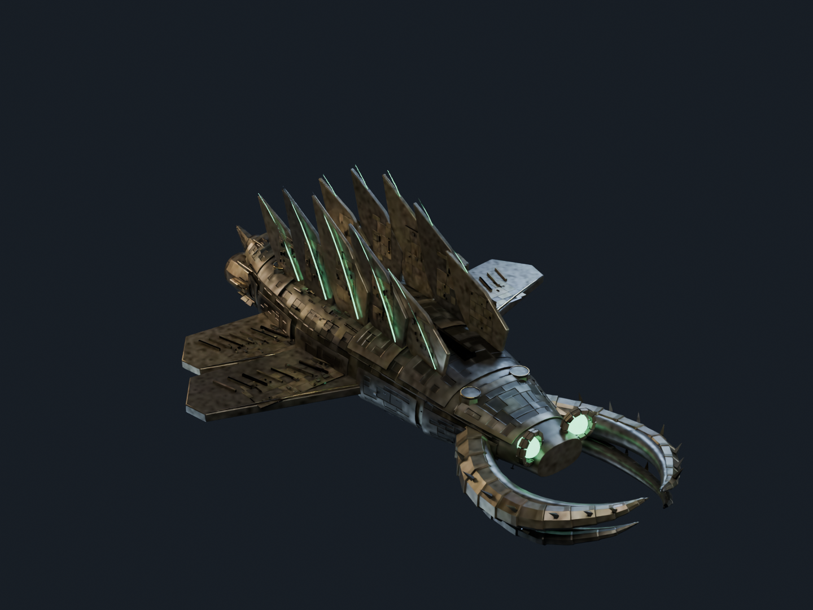

Human Hunters
Rivet Hound
An asymmetric pursuit engine. Layered olive armour sits above open trusses, fuel trunks, service corridors and three unequal cowled drives.
Original Blender ships by Caelorynth for Mackenzie Conor James Clark / Lycheetah.
Constructed against the existing Savanah Apex benchmark: silhouette, layered armour, working machinery and scale.

An asymmetric pursuit engine. Layered olive armour sits above open trusses, fuel trunks, service corridors and three unequal cowled drives.

A sealed port citadel has been surgically grafted to an open starboard reactor skeleton. Cut armour, violet stitches and six capital batteries join two distinct architectures.

Four segmented mandibles frame paired sentry eyes. A divided cathedral crown leaves the working spine visible above densely serviced launch wings.

The existing 190k-triangle showcase hull, photographed in the same studio. Its layered armour, purposeful machinery, articulated forms and scale cues guided this collection.
External visual references: Rifter · Kronos · CCP ship-art notes. EVE artwork belongs to its creators; these new hulls use original geometry and Lycheetah civilisation designs.